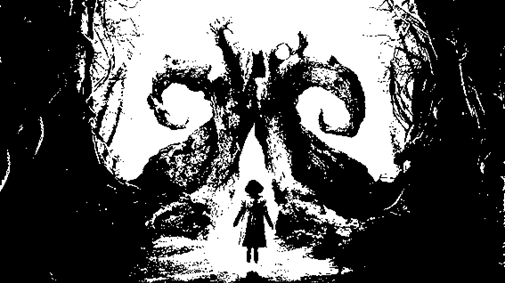

AHORCADOS

¿Quieres jugar a ahorcados?

¿Quieres jugar a ahorcados?
Un juego basado en el popular juego Ahorcados, adaptado a la historia de alicia en el pais de las maravillas, tomando el personaje mas misterioso de la historia el gato de cheviches.
No dejar escapar al gato Cheviches.
Adivinar la palabra, antes de que el gato de cheviches desaparesca. Tienes una pista.
EL GATO DE CHEVICHES
Tienes 10 oportunidades
¿Quieres empezar otra vez?